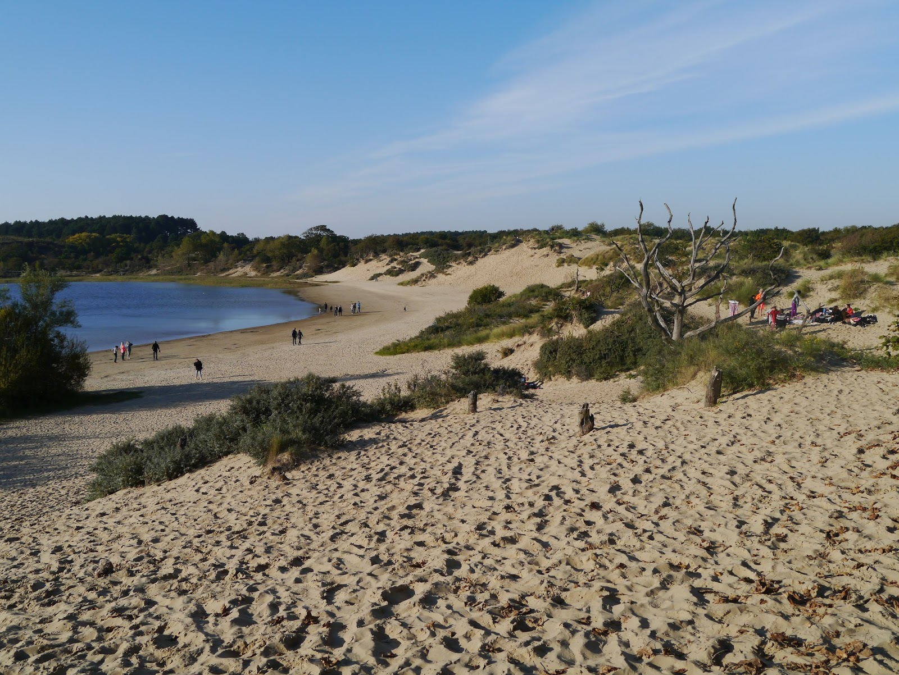
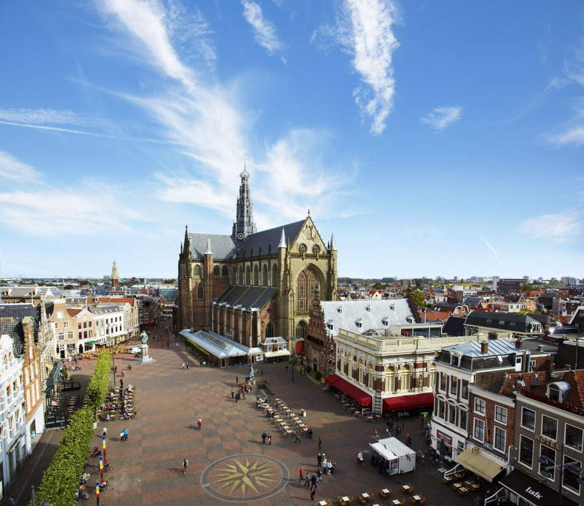
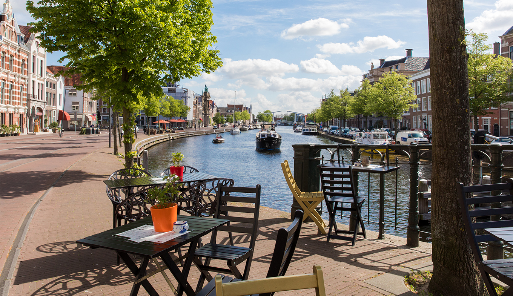
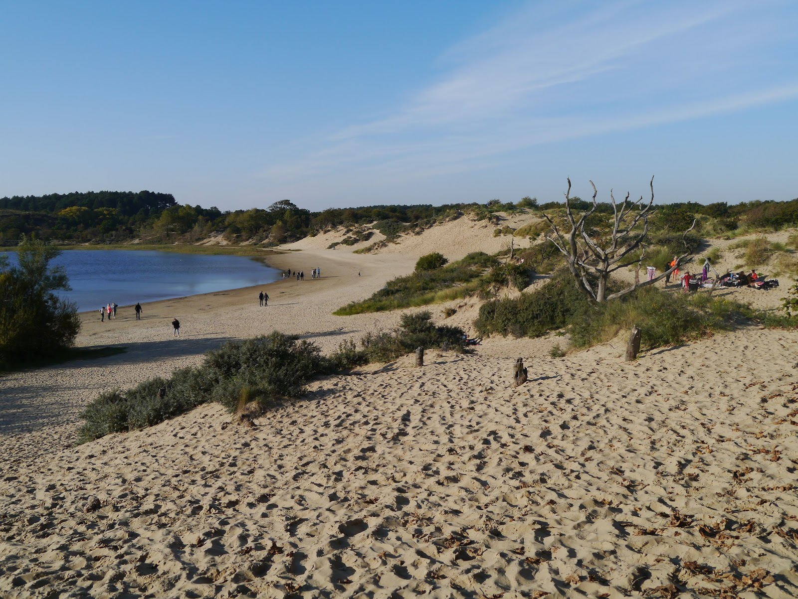
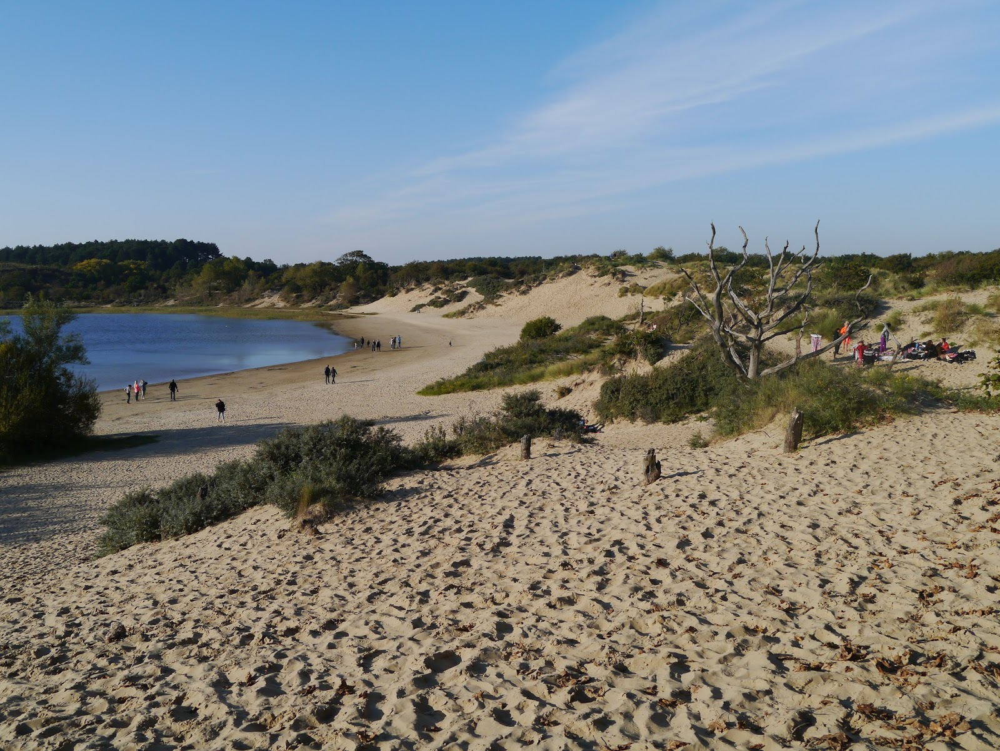

Doing little things is a step toward to doing big things better.
Haarlem
Haarlem is a renown historic town officially founded in 1245.
The city is situated very conveniently. 10 minutes ride by train and your already destinated to Amsterdam or to Schiphol Airport.
Haarlem has been elected as “THE” shopping city of the Netherlands quite a few times. The city is famous for its many independent and antique shops.
It’s a real delight to walk in the city. Thera are many streets and about 1200 monumental buildings. Haarlem lies very close to Dutch coast and dunes, where one can enjoy beautiful walks in the summer and winter.
Haarlem is also known for its “hofjes”. Hofjes are almshouses that are built around courtyards.
The oldest “hofje” in the Netherlands lies in of course in Haarlem.
Other must-sees are The Grote Markt (“the big market”), a big square in the centre, the Saint Bavo Church and the river Spaarne.

Neighborhood: Haarlem City Center
In the middle of the historical center of Haarlem lies the Grote Markt. Every Saturday there is a large outdoor market.
The Vleeshal in de Vishal is here as well as the town hall, where wedding ceremonies are held and the newlyweds posing for photos on the old steps.
Several main roads connect with the Grote Markt, one of which leads north to the main train station (about 10 minutes walk), while the Grote Hout Straat is the main shopping street that runs parallel to the small south to Houtstraat with the smallest boutiques. and cafes.
Just outside the Grote Markt is the Grote Kerk, a beautiful old church surrounded by courtyards and small bistros as well as quaint boutiques and specialty shops.


Sport
Taekwondo: HWA-RANG-DRAGON
Taekwondo is a Korean martial art, characterized by its emphasis on head-height kicks, jumping and spinning kicks, and fast kicking techniques.
Gymnastics is a sport that includes exercises requiring balance, strength, flexibility, agility, coordination, and endurance. The movements involved in gymnastics contribute to the development of the arms, legs, shoulders, back, chest, and abdominal muscle groups
Athletics is a collection of sporting events that involve competitive running, jumping, throwing, and walking. The most common types of athletics competitions are track and field, road running, cross country running, and race walking.
CKorfball (Dutch: korfbal) is a ball sport, with similarities to netball and basketball. It is played by two teams of eight players with four female players and four male players in each team. The objective is to throw a ball into a netless basket that is mounted on a 3.5 m (11.5 feet) high pole
Cycle sport is competitive physical activity using bicycles. Bicycle racing is recognised as an Olympic sport. Bicycle races are popular all over the world, especially in Europe.
Baseball is a bat-and-ball game played between two opposing teams who take turns batting and fielding. The game proceeds when a player on the fielding team, called the pitcher, throws a ball which a player on the batting team tries to hit with a bat.
Softball is a game similar to baseball played with a larger ball (11 to 12 in. circumference) on a field that has base lengths of 60 feet, a pitcher's mound that ranges from 35–43 feet away from home plate, and a homerun fence that is 220 feet away from home plate.
 
